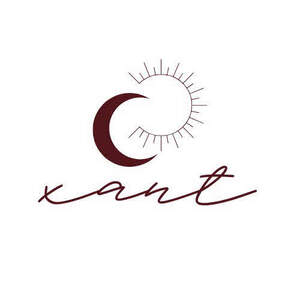

Trade Mark Journal No.2025/041 10 October 2025
UK00004248803 13 August 2025 (9,14,18,25,26,35,40)

- Class 9
- Spectacle cases; Corrective eyewear; Sunglasses.
- Class 14
- Jewellery; Fittings for watches; Key rings [split rings with trinket or decorative fob]; Parts and fittings for jewellery; Gemstones, pearls and precious metals, and imitations thereof; Ornaments [jewellery, jewelry (Am.)]; Key rings and key chains, and charms therefor; Watch bands; Time instruments; Jewellery boxes and watch boxes; Wristwatches; .
- Class 18
- Goods made of leather and imitations of leather, namely: bags (hand bags, travel bags, shopping bags, school bags, sports bags), wallets, card cases, business card holders, clothing belts, briefcases, document cases, backpacks, suitcases, trunks, attache cases, travel vanity cases, protective covers (in particular for documents, phones, keys), gloves and leather accessories; Luggage; Folio cases; Card cases [notecases]; Key cases; Cosmetic purses; Clutches [purses]; Umbrellas and parasols; Walking sticks; Purses; Rucksacks; Bags for sports; Bags; Briefcases; Handbags; Costumes for animals; Luggage, bags, wallets and other carriers; Luggage tags; Travelling sets; Valises; Saddlery.
- Class 25
- Neckwear; Underwear and nightwear; Kerchiefs [clothing]; Parts of clothing, footwear and headgear; Headgear; Eye masks; Clothing; Knitwear [clothing]; Work clothes; Waist belts; Pyjamas; Tights; Stockings; Gloves [clothing]; Socks; Swimming costumes; Shawls and stoles; Braces [suspenders] for clothing; .
- Class 26
- Accessories for apparel, sewing articles and decorative textile articles; Hat trimmings; Decorative articles for the hair; Decorative charms for cellular phones; Shoe trimmings; Decorative charms for eyewear; Trimmings for clothing; Hair ornaments, hair rollers, hair fastening articles, and false hair; Laces [except embroidery laces]; Charms, other than for jewellery, key rings or key chains; .
- Class 35
- Wholesale and retail sale, including online retail, of the following goods: Spectacle cases, Corrective eyewear, Sunglasses, Jewellery, Fittings for watches, Key rings [split rings with trinket or decorative fob], Parts and fittings for jewellery, Gemstones, pearls and precious metals, and imitations thereof, Ornaments [jewellery, jewelry (Am.)], Key rings and key chains, and charms therefor, Watch bands, Time instruments, Jewellery boxes and watch boxes, Wristwatches,Luggage, Folio cases, Card cases [notecases], Key cases, Cosmetic purses, Clutches [purses], Umbrellas and parasols, Walking sticks, Purses, Rucksacks, Bags for sports, Bags, Briefcases, Handbags, Costumes for animals, Luggage, bags, wallets and other carriers, Luggage tags, Travelling sets, Valises, Saddlery, Neckwear, Underwear and nightwear, Kerchiefs [clothing], Parts of clothing, footwear and headgear, Headgear, Eye masks, Clothing, Knitwear [clothing], Work clothes, Waist belts, Pyjamas, Tights, Stockings, Gloves [clothing], Socks, Swimming costumes, Shawls and stoles, Braces [suspenders] for clothing, Accessories for apparel, sewing articles and decorative textile articles, Hat trimmings, Decorative articles for the hair, Decorative charms for cellular phones, Shoe trimmings, Decorative charms for eyewear, Trimmings for clothing, Hair ornaments, hair rollers, hair fastening articles, and false hair, Laces [except embroidery laces], Charms, other than for jewellery, key rings or key chains, goods made of leather and imitations of leather, namely: bags (hand bags, travel bags, shopping bags, school bags, sports bags), wallets, card cases, business card holders, clothing belts, briefcases, document cases, backpacks, suitcases, trunks, attache cases, travel vanity cases, protective covers (in particular for documents, phones, keys), gloves and leather accessories.
- Class 40
- Treatment of textiles, leather and fur; processing of textiles, leather and fur; Application of motifs to textiles; Pattern printing on fabric; Sewing (custom manufacture); Custom tailoring; Dressmaking; Cloth cutting; Needlework and dressmaking; Clothing alteration; Applying finishes to textiles; Applying finishes to fabric; Cloth edging; .
PETSTYLE SPÓŁKA Z OGRANICZONĄ ODPOWIEDZIALNOŚCIĄ
Representative: MARIA STASZCZYK